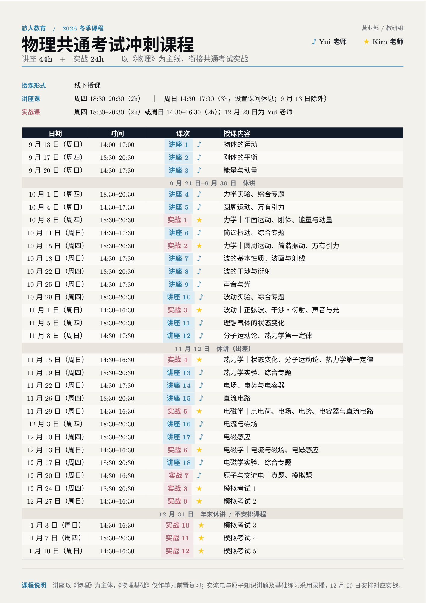

力学 01
物体运动、刚体与重心
直线与平面运动、相对运动、投射运动，以及后续刚体与重心内容的课堂主讲义。
2026 冬学期｜大学入学共通考试物理
讲义统一放在上方资料区；每次课程的板书、录播和课后复习资料按讲次归档。上完课后只需要回到对应卡片，不必在群聊里反复找文件。
最新课表
最新课表已直接显示在本页；点击图片可在新标签页放大查看。

点击放大查看课程资料
讲义按专题集中整理，不重复放入每一讲课程卡片。课堂板书和课后复习资料请在下方按讲次查看。
专题训练
围绕刚体平衡、重心与力的合成进行集中练习，建议完成后再对照课堂讲义复盘。
包含杆与梯子的平衡、垂直抗力的作用点、滑动与转倒、刚体平衡与重心等内容，共 15 小问。
课程记录
一讲一张卡片。板书、录播和课后复习都固定在同一位置；没有上传的项目会明确显示为“待上传”。
直线运动与图像、相对速度、平面运动、水平投射与斜方投射。
课程材料：第一份讲义第 1--5 页。参考书为日本高中指定物理教科书。
本讲内容：课程介绍、大学入学共通考试物理概况、匀速直线运动、匀加速直线运动、平面内运动、平抛与斜抛运动，以及力与运动的基本规律。
范围说明：“物理基础”内容以基础知识复习为主；“物理”内容以重要例题归纳讲解为主。
第 2 讲为 9 月 17 日（周四）18:30--20:30，使用第一份讲义后半部分，学习空气阻力下的落体运动与刚体平衡。后续周日课程暂定为 14:30--17:30。
速度相关阻力、终端速度、力矩、刚体平衡与重心位置，并衔接第一讲作业讲解。
课程材料：第一份讲义第 6 页之后。
本讲内容：斜抛运动重要作业题讲解、有空气阻力的落体运动、力矩平衡与重心。
范围说明：“物理基础”内容以基础知识复习为主；“物理”内容以重要例题归纳讲解为主。
第 3 讲为 9 月 20 日（周日）14:30--17:30；第 4 讲为 10 月 1 日（周四）18:30--20:30。课程时间如有调整，以本页最新通知为准。
每次课结束后会继续按同一格式补充板书、录播和课后复习资料。